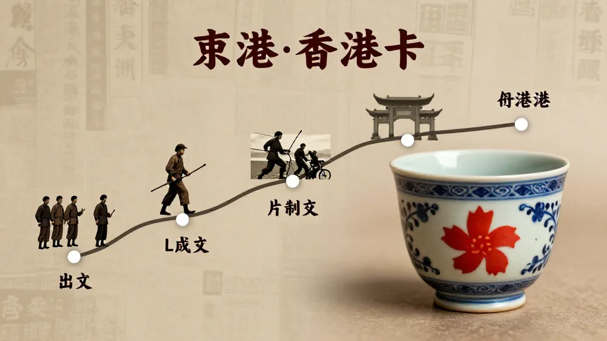
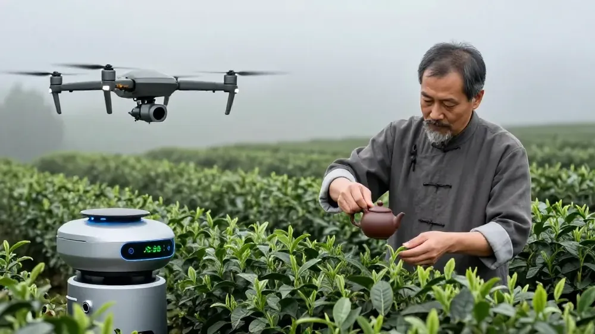
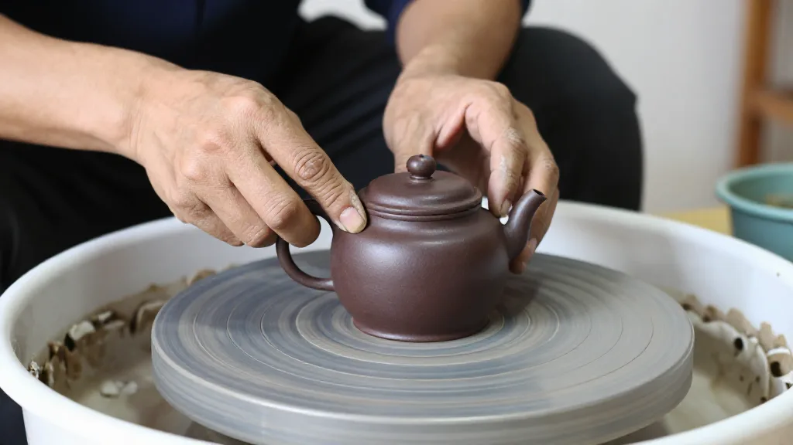

2026年9月15日，香港。今日见到一张相——暗色石枱上摆住一个紫砂壶同一只100到200年嘅日本古杯，茶汤金黄，旁边有个布袋和尚雕像。
呢只杯嘅年纪，可能比我嘅祖父仲大。我哋70后习惯快速迭代、效率优先，但呢只古杯颠覆咗呢种思维。
一、紫砂壶同日本古杯——东西方嘅时间价值
相入面有两个时间见证者。紫砂壶系宜兴传统工艺，好壶要养3到10年先出包浆。日本古杯系江户后期到明治时代，1826到1926年之间。
呢只杯见证过鸦片战争、明治维新、甲午战争、一战、新文化运动、抗战、日本重建、香港回归，一直到AI时代。一百年前嘅人，从冇谂过呢只杯会喺2026年香港，俾一个70后用嚟反思AI，呢个就系时间嘅奇妙。

圖片由 AI輔助創作（Z-Image-Turbo）
二、布袋和尚——笑住面对人生嘅智慧
布袋和尚笑到见牙唔见眼，大肚能容容天下难容之事，开口便笑笑世间可笑之人。别人笑佢癫佢笑笑口，畀气受当冇事，见人跌低扶起身。
喺AI高速发展嘅今日，我哋特别需要呢种笑住面对嘅智慧：唔好畀外境搞乱自己嘅心。
圖片由 AI輔助創作（Z-Image-Turbo）
三、紫砂壶嘅慢同AI嘅快
养壶要时间：一个月有茶香，一年温润，三年包浆初成，十年如玉。AI呢，一个月迭代一次，一年革新几次，三年重塑行业，十年连行业定义都变。一边越慢越有价值，一边越快越被淘汰。我哋70后正喺两种时间哲学交界：习惯慢工出细货，但面对快速迭代，点平衡？
四、2026年嘅中国茶产业
中国8月出口增长25%，国际茶日成全球活动，AI、无人机、机器人采摘进入茶产业。传统派讲越陈越香、手工温度、时间价值；AI派讲效率、标准化、数据溯源。未来唔系传统对AI，而系传统乘AI。唔识传统唔识文化核心，唔识AI做唔到全球市场。

圖片由 AI輔助創作（Z-Image-Turbo）
五、手工教我哋嘅事
2026年Anthropic警告有人用AI研发武器，技术唔一定系好事。手工嘅价值唔系慢，系有温度。手拉胚师傅嘅指纹力度心境注入壶入面，机器复制唔到。AI时代最珍贵系有温度嘅创作：手写信胜过百封AI邮件，手绘图胜过百张AI图，用心文章胜过百篇AI内容。

圖片由 AI輔助創作（Z-Image-Turbo）
六、70后点样喺AI时代养自己？
紫砂壶靠养先有价值，人靠咩？第一养深度，做到行业最深处，AI生成唔到十年洞察。第二养关系，客户朋友系AI替代唔到嘅，连接系人类核心能力。第三养手艺，写作谈判判断，AI辅助唔能替代。第四养心态，布袋和尚咁笑住面对，唔好被焦虑绑架。
新壶系初入AI嘅人，茶汤浸润系每日学习，包浆系独特风格，壶内茶垢系失败经验。一把养过嘅壶传几代人，一个养过嘅人影响几代人。
七、古杯前嘅反思
中国壶泡中国茶，倒入日本古杯，呢个就系文化对话。100到200年前嘅杯，2026年仲用紧。AI产品有几个撑到2200年？紫砂工艺传几千年，古杯设计传几百年，AI模型寿命可能得几年。乜先系真正价值？快速迭代嘅便利，定穿越时间嘅传承？答案系能穿越时间嘅嘢先系价值。
三句话：时间系最好过滤器，撑过百年先系经典；传承比创新更难，百年前嘅杯仲有人用就系力量；慢嘅嘢最有快嘅价值，古杯紫砂手工艺喺AI时代反而最值钱。
2026年见证AI高速但被警告滥用，出口增长但限制流动，茶结合AI但手工无可替代。矛盾就系快对慢、AI对手工、效率对温度。我哋答案系两者都要：用AI效率做有温度嘅嘢，用紫砂嘅慢养有深度嘅人生。
15 September 2026, Hong Kong. Today I saw a photo — a zisha (purple clay) teapot and a 100 to 200-year-old Japanese cup on a dark stone table, the tea a golden colour, and next to them a statue of Budai, the cloth-bag monk.
That cup may be older than my grandfather. My generation, born in the 70s, is used to fast iteration and putting efficiency first, but this old cup overturns that way of thinking.
1. The zisha teapot and the old Japanese cup — the value of time, East and West
There are two witnesses to time in the photo. The zisha teapot is traditional Yixing craft; a good pot needs three to ten years of use before it develops its patina. The old Japanese cup dates from the late Edo to the Meiji era, between 1826 and 1926.
That cup has lived through the Opium War, the Meiji Restoration, the First Sino-Japanese War, the First World War, the New Culture Movement, the War of Resistance, Japan's reconstruction and Hong Kong's handover, all the way to the AI era. The people of a hundred years ago never imagined this cup would be in Hong Kong in 2026, being used by someone born in the 70s to think about AI. That is the strange magic of time.
Image created with AI assistance (Z-Image-Turbo)
2. Budai — the wisdom of facing life with a smile
Budai laughs so hard you cannot see his eyes. His big belly can hold what the world finds hardest to hold; the moment he opens his mouth he laughs at the people the world finds laughable. When others laugh at him for being mad, he just smiles; when he is given grief, he treats it as nothing; when he sees someone fall down, he helps them up.
With AI developing as fast as it is today, we especially need this wisdom of facing things with a smile: do not let outside circumstances throw your own mind into disorder.
Image created with AI assistance (Z-Image-Turbo)
3. The slowness of zisha and the speed of AI
Seasoning a pot takes time: after a month it holds the scent of tea, after a year it feels warm and smooth, after three years the patina begins to form, after ten years it is like jade. AI, meanwhile, iterates once a month, brings a few revolutions a year, reshapes an industry in three years, and in ten years even the definition of the industry has changed. On one side, the slower it is the more valuable; on the other, the faster it is the sooner it is obsolete. My generation stands exactly at the border between these two philosophies of time: used to slow work producing fine goods, yet facing fast iteration — how do we balance the two?
4. China's tea industry in 2026
China's exports grew 25% in August, International Tea Day has become a global event, and AI, drones and robotic picking are moving into the tea industry. The traditional camp talks about the older the better, the warmth of handwork, the value of time; the AI camp talks about efficiency, standardisation and data traceability. The future is not tradition versus AI, it is tradition times AI. Without tradition you do not understand the core of the culture; without AI you cannot reach the global market.
Image created with AI assistance (Z-Image-Turbo)
5. What handwork teaches us
In 2026 Anthropic warned that someone was using AI to develop weapons; technology is not automatically a good thing. The value of handwork is not that it is slow, it is that it carries warmth. In a hand-thrown pot, the craftsman's fingerprints, pressure and state of mind go into the clay, and a machine cannot copy that. The most precious thing in the AI era is creation with warmth: a handwritten letter beats a hundred AI emails, a hand-drawn sketch beats a hundred AI images, a heartfelt article beats a hundred pieces of AI content.
Image created with AI assistance (Z-Image-Turbo)
6. How does my generation look after ourselves in the AI era?
A zisha pot only becomes valuable through seasoning. What about a person? First, season your depth: go to the deepest part of your industry, because AI cannot generate ten years of insight. Second, season your relationships: clients and friends cannot be replaced by AI, and connection is the core human ability. Third, season your craft: writing, negotiating, judgement — AI can assist but not replace them. Fourth, season your mindset: face things with a smile like Budai, and do not let anxiety take you hostage.
A new pot is someone just starting with AI; the tea soaking it is daily learning; the patina is your own distinctive style; the tea stains inside are your failures. A well-seasoned pot is passed down through generations, and a well-seasoned person influences generations.
7. Reflections in front of the old cup
A Chinese pot brews Chinese tea and pours it into an old Japanese cup — that is a dialogue between cultures. A cup from 100 to 200 years ago is still in use in 2026. How many AI products will last until 2200? The craft of zisha has been handed down for thousands of years, the design of that old cup for hundreds, while the lifespan of an AI model may be a few years. So what is real value? The convenience of fast iteration, or inheritance that crosses time? The answer is that only what can cross time is value.
Three sentences: time is the best filter, and only what survives a century is a classic; passing things on is harder than innovating, and the fact that a century-old cup is still in use is strength; slow things have the fastest value, and in the AI era old cups, zisha and handcraft are worth more than ever.
In 2026 we see AI moving fast but being warned against, exports growing while movement is restricted, tea combined with AI while handwork remains irreplaceable. The contradiction is speed against slowness, AI against handwork, efficiency against warmth. Our answer is to have both: use AI's efficiency to make things with warmth, and use zisha's slowness to season a life with depth.